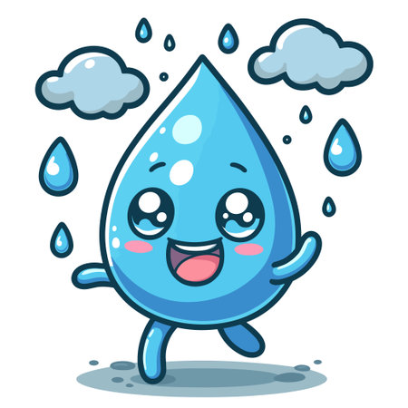

Habia una vez una pequeña gota de agua llamada Gotita vivia feliz en un rio de agua H2O cristalino que corria entre montañas verdes y prados llenos de flores. Cada mañana,el sol le saluda con sus rayos dorados, y los peces jugaban a su alrededor.
—¡Hola, Gotita! —decia el pez Nemo—, ¿Listo para otro dia de aventura?
—¡claro! —respondia Gotita, rebotando suavemente sobre las olas— , Me encanta viajar con el río.
Pero un dia, algo mágico pasó. El sol brilló con más fuerza que nunca, y Gotita sintío un cosquilleo en todo su cuerpo.
—¡Ay! —dijo—,¡Me siento más ligera!
De pronto, empezó a elevarse lentamente, como si tuviera alas invisibles. ¡Estaba evaporándose!
Y así, Gotita subió y subió, hasta convertirse en una pequeña nube blanca en el cielo.
para saber más sobre el ciclo del agua, visita este enlace

Allá arriba, Gotita no estaba sola. Conoció a muchisimas otras gotas que también habían subido desde ríos, lagos y mares.
Se tomaron Todas de las manos y juntas formaron una nube grande y esponjosa, como de algodón.
¡Era muy divertido flotar juntas por el cielo, empujadas por el viento! "¡Qué blandita es nuestra casa nueva!",
decían riendo. A esto, una gota más sabia le explicó que se llama condensación.
La nube se hizo más y más grande a medida que llegaman más y más amigas gotas
Una por una, comenzaron a caer de nuevo hacia la Tierra en forma de lluvia.¡Y a esto se le llama precipitación! Después de mojar el bosque. Gotita comenzó a fluir por un pequeño arroyo.
—¡Bienvenido de vuelta, Gotita! -, dijo el rio co un murmullo.
Y así, Gotita continuó su viaje en el gran ciclo del agua, lista para volver a subir, caer y ayudar a la Tierra a vivir.